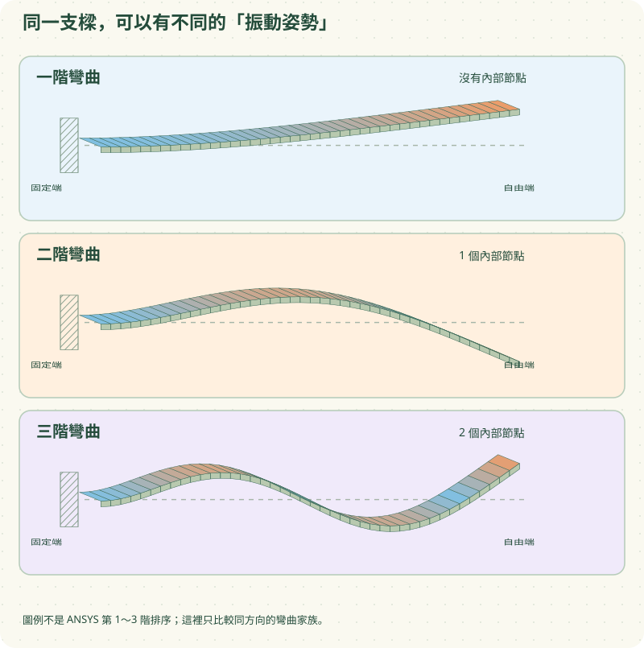

先讀懂固有頻率，再看振型
像看一支尺的不同振動姿勢：先玩振型示意，再分清楚固有頻率、節點與顯示振幅。
開始前
- 知道質量、剛性與頻率的基本意義
學習目標
- 分辨固有頻率、激振頻率與振型。
- 理解模態分析的輸入與輸出。
- 知道為什麼振型圖上的最大變形量不能當成實際位移。
核心觀念：結構的動態特徵
固有頻率描述結構在特定材料、幾何與拘束下的自由振動特性；振型描述各位置彼此如何移動。修改夾持方式，即使幾何與材料不變，也可能得到不同的結果。
這是線性、無阻尼自由振動的特徵值問題。K 是剛性矩陣，M 是質量矩陣，φ 是振型，ω 的單位是 rad/s，f 的單位是 Hz。這個入門案例不包含預應力、旋轉效應與阻尼。
| 名詞 | 你應該怎麼理解 |
|---|---|
| Natural Frequency（固有頻率） | 結構在指定條件下的動態特徵。 |
| Excitation Frequency（激振頻率） | 外力或其他輸入隨時間重複的頻率。 |
| Mode Shape（振型） | 同一模態內各處的相對移動形狀。 |
範例：讓懸臂樑動起來
想像把尺的一端夾在桌邊。點下不同型態，看看它可以往上彎、往側面彎，或讓截面扭轉。先按播放，再把相位停在你想觀察的位置。
同一支樑，可以怎麼振？

整支樑往同一方向彎。除了固定端，沒有其他內部節點。
彎曲依 Euler–Bernoulli 梁理論繪製；扭轉為概念插值。動畫放大、同速慢放，顏色依各型態最大位移正規化；不是 ANSYS 求解結果，也不是實際三維階數排序。 圖解依據 ↗
先看哪裡不動
固定端保持不動；較高彎曲振型還可能有內部節點。
再看往哪裡動
Y 向和 Z 向彎曲是不同方向；扭轉則是截面繞長軸旋轉。
最後記住顯示比例
放大、慢放是為了看清楚。它們不等於實際振幅或真實振動速度。
一眼看懂：彎曲階次與內部節點

⤢ 放大圖解這裡的內部節點，指梁理論中中心線橫向位移為零的位置，不代表三維實體該截面上每一點的總位移都為零。固定端不算內部節點。同方向彎曲階次提高時，會看到更多反向彎動的區域。
💡 想一想：振型動畫變成直線，代表振型消失了嗎？
不一定。在動畫中，中心線可能同時經過平衡位置；這只是相位改變。內部節點則是在整個振動週期中，中心線橫向位移保持為零的位置。
把二階彎曲的相位從 90° 拉到 270°，形狀方向會反轉，但內部節點的位置保持不變。
開始前要準備的資料
- 幾何尺寸與一致的單位。
- 材料的彈性性質與質量資訊；本教學以楊氏模數、蒲松比及密度描述均質材料。
- 能代表實際安裝方式的拘束；組合件還要檢查零件間連接。
- 希望觀察的頻率範圍及模態數，並以網格檢查確認關注結果是否穩定。
常見誤解
固有頻率
結構本身在這組材料、幾何與拘束下的動態特徵。
激振頻率
外力或運轉輸入重複出現的頻率，來自輸入條件。
實際振幅
還受輸入力、方向、阻尼等影響，基本模態分析不直接給出。
固有頻率接近某個激振頻率，代表需要進一步評估動態響應。實際振幅還取決於激振位置、方向、阻尼及模態耦合，不能僅憑頻率接近就宣稱已發生嚴重共振。
多求幾百階不等於分析更正確。模態數應依研究頻帶與後續分析需求選擇；入門案例先看前六階。
重點整理
- 模態分析先回答「有哪些頻率與振動形狀」。
- 結果會隨材料、幾何與拘束改變。
- 先檢查物理條件，再討論頻率與振型。
參考來源
以下來源用於技術查證；案例尺寸與初始網格是本教學自訂設定。原廠頁面可能依存取權限要求登入。
- ANSYS Theory Reference — Modal Analysis ↗2024 R2 · 無阻尼自由振動假設、特徵值問題與正規化。
- ANSYS Mechanical User’s Guide — Modal Analysis ↗2024 R2 · Workbench 模態分析流程、材料需求與振型結果判讀。
- Graz University of Technology — Cantilever beam ↗梁理論教材；非 ANSYS 版本限定 · 懸臂樑彎曲的邊界條件、解析振型及特徵根。互動繪圖依此式計算。
- ANSYS / Cornell — Cantilever Beam Modal Analysis: Pre-Analysis ↗原廠梁理論課程；非 2024 R2 操作介面 · Euler–Bernoulli 彎曲振型與理論預估；本網站未使用課程的範例頻率作為自身結果。